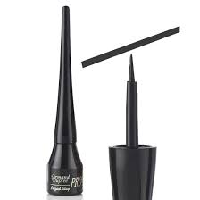
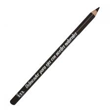

TRUE BEAUTY
Delineadores
</center> <H3>Delineador líquido</H3> <H3> El Delineador líquido es un líquido opaco que actualmente aparece en una botella pequeña y se aplica con un pequeño cepillo o un aplicador especial parecido a un pincel. Forma una línea acentuada y precisa. </H3> <center></center> <H3>Delineador en lapiz</H3> </center> <H3> El lápiz es la mejor opción si estás empezando y te apetece ir probando diferentes looks marcando tu mirada. Un lápiz que no irrite los ojos, oftalmológicamente testado, apto para usuarias de lentillas y económico que te permita ir probando opciones diferentes tanto para el párpado como para la línea de agua. </H3> <center></center> <H3>Delineador en gel</H3> <H3> Este delineador le aporta al delineado un efecto mate y sedoso, muy parecido al que da el delineador líquido, sin embargo, son más fáciles de aplicar, ya que pueden deslizarse fácilmente en el ojo y obtener una pigmentación rápida con una larga duración. </H3> <center></center> <article class="articulo"> <div class="clearfix"> </div> <footer> JESSICA CRUCES </footer> <body> </body>